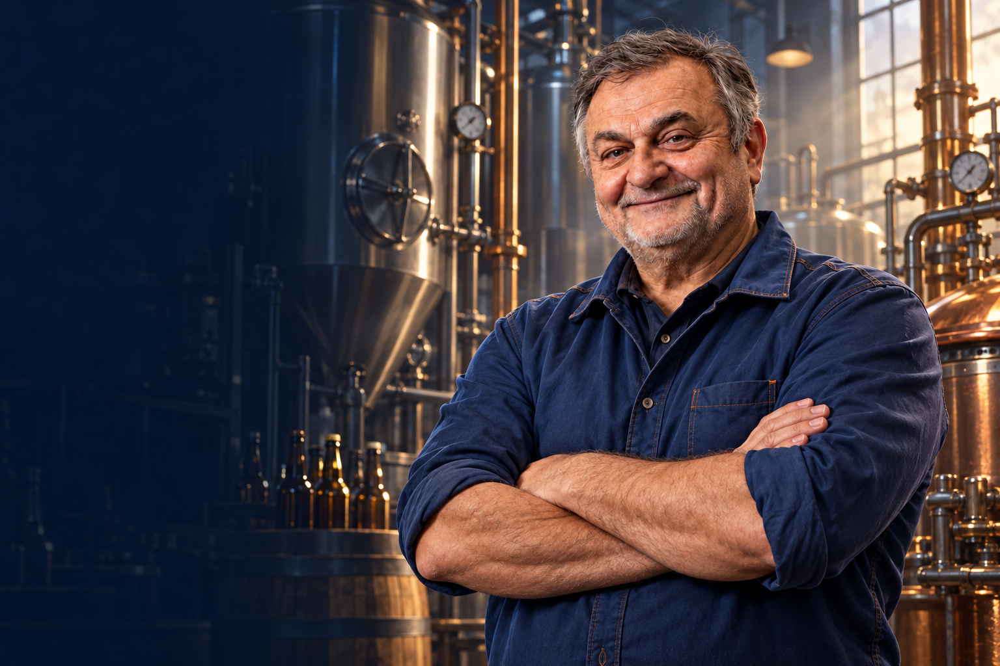
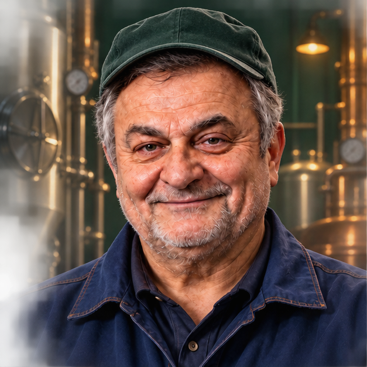

01 / Варочный цехПартия № 001 / заражена
+

Arkady is Back
ПОСЛЕДНЯЯ
ВАРКА
Тридцать лет у варочного котла.
Сегодня — против целого цеха микробов.
Аркадий снова выходит на смену.
АркадийПивовар. Ветеран. Последняя надежда цеха.
Изображение создано нейросетьюЗдоровье100

АркадийБутылка∞
Цех очищен0 / 12
W A S D движение Мышь / ← → прицел Клик / Пробел огонь1–4 оружие E действие Esc пауза M карта
Звук и музыка
Настройки сохраняются. Во время реплик музыка становится тише.
Инструменты
санобработкиВыбирай на клавишах 1–4
санобработкиВыбирай на клавишах 1–4